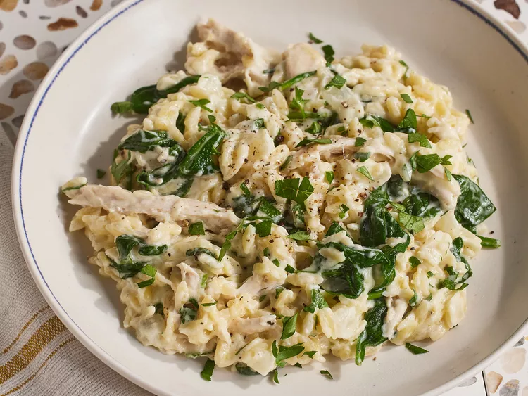

Orzo

Description
This one pot chicken orzo dish is wonderfully cheesy and creamy similar to risotto, but you don't need to stir! Lemon gives it brightness and parsley and spinach add color.
Ingredients
- 2 tablespoons extra-virgin olive oil
- chopped yellow onion
- 2 cups heavy cream
Steps
- Heat oil in a large Dutch oven over medium
- Stir in heavy cream
- Stir in chicken and spinach